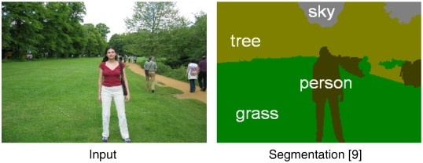

The Chocolate Thief
I remember when I was three years old and I thought that everything was free. If I laid my eyes on it, then by golly it was mine (the thought process of every toddler)! There was one time that I went into a store with my dad. I saw a gorgeous, delectable Hershey bar and I knew it was a match made in heaven. So I took the bar.
I was delighted that I could enjoy anything that I laid my eyes on. However, to my dismay, my father witnessed his toddler stealing and he quickly reprimanded me. He made me apologize to the store manager in front of all the customers, which was very overwhelming for my small self. With tears in my eyes, I told my dad that I was sorry and I wouldn’t do that again. He patted the top of my head and said, “Joey (this is what he called me as a kid), nothing in this world is free.” And he was right. Well for the most part….
Is It Free or Nah?
We now live in a day and age where technology and software is easily accessible, and even “free”. If we want to watch videos, we encounter a plethora of options through websites like YouTube, Vimeo, Dailymotion, etc. If we want to use an email service we can use Gmail, Outlook, Yahoo, etc. If we want to connect, post videos, share media, display all of pictures, chat with our friends, or write politically poignant pieces, we can use Facebook, Twitter, and other social media outlets. And we can do all of this for “free”. Or is it actually truly free?
What if I told you that Google and Facebook are actually ad companies and that they make money off of you. They do this by using targeted advertising (which isn’t a bad thing by the way). What if I told you that there are multiple tech companies that in essence make money without having to sell you a thing (and some use targeted advertising as well) I think you would disagree with me initially but allow me to display some of the ways that these companies operate.
Big Data
You see Google, and several other Internet companies, are able to offer free services in exchange for something. Can you guess what that this something is? This something is data, and boy do we (corporations) have a lot of it.

Big Data is the craze these days. The reason why big data is so big is because it is cheap to store, and it fuels machine learning algorithms. Machine Learning, which is a subfield within Artificial Intelligence (AI), is concerned with making machines learn from experience. And this process is done by giving these algorithms lots of data. Machine Learning has seen even more impact today because of access to GPUs (for deep learning applications), compute power, and the access to big data. Some monumental advances include, but are not limited to: speech recognition, image segmentation, video classification, Computer Vision tasks, NLP tasks, optimizing systems, etc.
 This displays the use of image segmentationHere is a great article about some myths about machine learning.
Company Use Cases
These very principles are at the heart of Google Search, and several applications today. Spam filters use a machine learning algorithm (traditionally they have used Naïve Bayes), Facebook uses a convolutional neural network architecture (CNN) to automatically tag people in pictures, Amazon uses a recommender system to recommend products, and there are a plethora of other applications.
"Nothing in this world is free." -My Dad
I bring this up because we now live in an age where our data, or rather our metadata (this is essentially data about our data. An example would be the location where a picture was taken), can be seen and used by major corporations. Sure we have access to convenience (because a lot free and we can do pretty cool things), but at what cost?
Alarming Findings
Just a couple weeks ago, WikiLeaks revealed the CIA Hacking tools across several platforms. If you would like to read more about this Qunicy Larson has a great article on medium about this.
At this point, we need to take care of our data. We all know that taking care of our SSN, birth certificate, and our finances is paramount to protecting ourselves in today’s world. Why don’t we do the same with our data? Here is another article by Qunicy that highlights some actions you can pursue.
So Why Am I Writing This?
Firstly, I am pointing this out because many of us believe that the Internet and technology is magic.

Sadly this isn't the case (it would be awesome if were though!).
The public needs to become more aware about general software and computer science concepts. By becoming more informed about technology, the general public can find easier ways to navigate through the myriad of software options as well as knowing what the software actually does. The intent behind this was not to alarm, but to provide some context for those who just like to surf the Internet.
Secondly, I have been doing a lot of introspection lately and I have realized that software has several pitfalls. It is hard to make software 100% bug free, completely secure, protects user data, and work as intended. Software engineers, developers, data scientists, computer science students, and professionals who work in technology wrestle with this everyday.
“If debugging is the process of removing software bugs, then programming must be the process of putting them in.”- Edsger Dijkstra
On top of that, since software is literally in everything, it is becoming harder to create standards that work across several hardware platforms and services. But even with all of this in mind, we must move into this direction swiftly and diligently.
We are entering the spring of ML (machine learning) techniques, and dawning on the IoT (internet of things). It is a very exciting time to be involved in technology.
But even with all of this excitement, we must remember to focus on correctness, safety, and privacy for our users. Most of our users are not privy about software so we must speak on their behalf. As researchers, engineers, and enthusiasts, we must make sure that our systems are indeed correct and won’t put anyone at risk; furthermore, it is of the upmost importance to create ML applications, and software that behaves and benefits society (i.e. Microsoft’s Tay initial failed experiment).
People fear AI taking control of the planet (this debate will be left out of this post), but what we should be more afraid of is bad software (if you would like to learn more, then you should watch this talk by Ben Zorn), especially software in critical settings.
Future Proceedings of this Blog
I am by no means an expert in PLT, ML, or cryptography. But I thought it would be cool to document some of the things I will be learning along the way; moreover, this will give me a chance to reflect on my development as a CS student when looking back. This blog will focus on Programming Language Theory, Cryptography, and Machine Learning with an emphasis on safety and security.
These areas are potential avenues of future research for me (honestly I just want to make software safe and secure, as well as implement cool ML findings).It will take me a while to get caught up on speed on PL and Cryptography techniques but I am excited to start learning about these topics! Thanks for reading, and let me know what you think of the post!
Catch ya on the flip side! - Joel Kwaku Owusu Afriyie